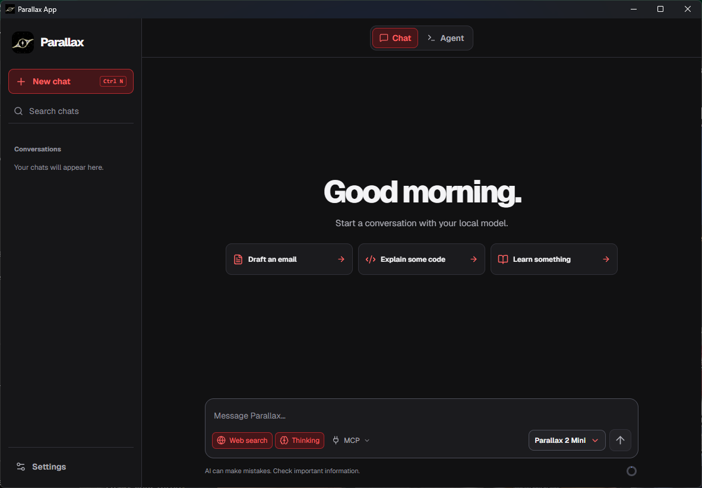

Parallax 2 Family
Available now- Parallax 2 Mini
- Parallax 2
Explore the Parallax family of compact models for reasoning and coding, designed to run locally.
Parallax App runs inference on your own hardware for fast responses and private local processing.

See how a Parallax agent works through a coding task in the interactive demo.
Open PilotCoordinate multiple agents to divide work and run tasks in parallel on local hardware.
Explore SquadronDeploy multiple instances of a Parallax model simultaneously. While one agent writes the frontend code, another handles the backend logic, and a third audits for security flaws.
The commander model automatically breaks down complex prompts into smaller, manageable tasks and assigns them to the most suitable sub-agents in the swarm.
By distributing the workload across parallel agents, Squadron minimizes latency and maximizes throughput, turning your local machine into a mini supercomputer.
Pass@1 estimates the chance of a correct result in one attempt. Pass@10 estimates the chance of at least one correct result in ten attempts.
Exact-match scoring with 10 answer choices per question and no examples in the prompt (zero-shot).
| Subject | Questions | Score |
|---|---|---|
| Math | 1,351 | 88.90% |
| Business | 789 | 77.74% |
| Biology | 717 | 70.71% |
| Chemistry | 1,132 | 84.81% |
| Economics | 844 | 62.56% |
| Physics | 1,299 | 81.45% |
| Psychology | 798 | 55.01% |
| Computer Science | 410 | 66.59% |
| Health | 818 | 49.51% |
| Other | 924 | 47.51% |
| Philosophy | 499 | 45.09% |
| Engineering | 969 | 68.83% |
| History | 381 | 34.38% |
| Law | 1,101 | 32.70% |